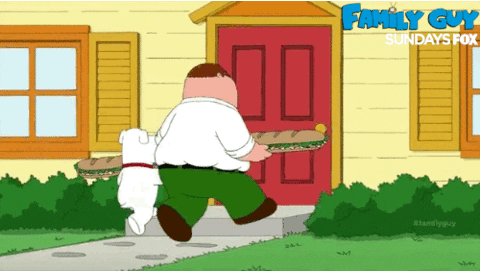

Curiosidades sobre los personajes
Curiosidad N°1
El nombre completo de Meg es Megatron Griffin.
Curiosidad N°2
La voz de Brian es simplemente Seth MacFarlane hablando con su voz regular. Además, muchas de las creencias personales de Brian son compartidas por MacFarlane, incluyendo su visión política y su ateísmo.
Curiosidad N°3
Peter y Brian están inspirados en Larry y Steve, dos personajes que aparecen en los cortometrajes animados The Life of Larry (1995) y Larry & Steve (1996), escritos y dirigidos por Seth MacFarlane como parte de su tesis para obtener el título en una escuela de diseño.
Curiosidad N°4
Brian es un novelista frustrado. A lo largo de la serie, todos en la familia han hecho chistes acerca de su novela inconclusa. En el segundo episodio de la temporada 6 se revela que el título de esta novela es Faster Than the Speed of Love (“Más rápido que la velocidad del amor”).
Curiosidades sobre la serie
Curiosidad N°1

Todos los episodios tienen al menos una instancia en la que un personaje le dice a otro “¿Qué demonios?”
Curiosidad N°2
George Lucas ocasionalmente le ha brindado el permiso de hacer chistes sobre Star Wars porque es fanático de la serie.
Curiosidad N°3
Padre de Familia fue nominada a mejor serie de comedia en los Premios Emmy de 2009. Esto no sucedía desde 1960, cuando fue nominada Los Picapiedra.
Curiosidad N°4
La serie fue cancelada tras su tercera temporada, pero gracias al éxito en repeticiones y DVD, volvió en 2005.